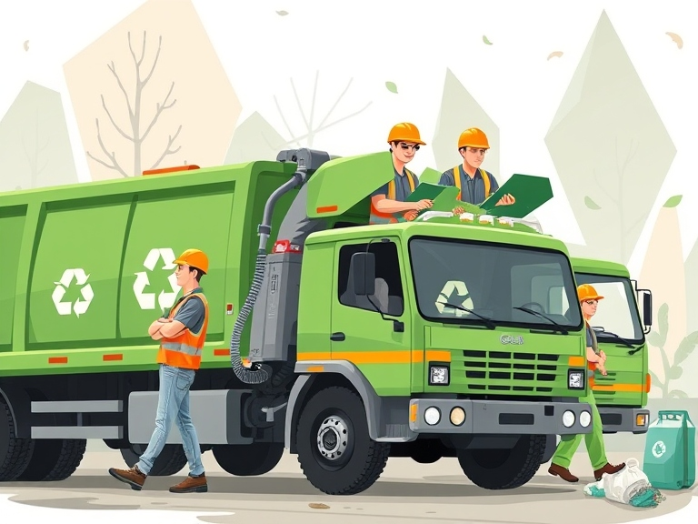
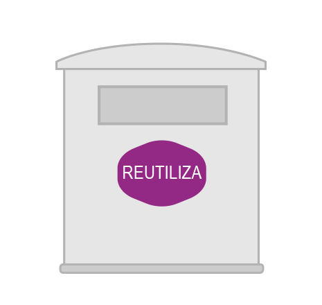

Servicios de Reciclaje en Bilbao
Bilbao ofrece una infraestructura avanzada y accesible para la gestión y reciclaje de residuos, diseñada para fomentar la sostenibilidad y el cuidado del medio ambiente. Con múltiples servicios y facilidades, el objetivo es promover una correcta gestión de los desechos y aumentar la participación ciudadana en el reciclaje.

Tipos de Contenedores Disponibles
La ciudad cuenta con una red bien distribuida de contenedores de reciclaje,
cada uno con un código de color y finalidad específica:
Es fundamental que cada material sea depositado en el contenedor correcto para garantizar un reciclaje eficiente.
Residuos orgánicos
Contenedor marrón
- • Restos de comida, verduras, frutas, pan, bollería, frutos secos.
- • Restos de plantas,
- • Papel de cocina y servilletas usadas, hueveras sucias.
- • Posos de café e infusiones.
Envases
Contenedor amarillo
- • Envases de plásticos: botellas, envases de alimentación, de limpieza, envoltorios, poliestireno
- • Envases de metal: latas de conserva, bolsas, tapas metálicas
- • Envases tetrabrik: de bebidas, de alimentos
Papel y Cartón
Contenedor azul
- • Papel, periódicos, bolsas de papel.
- • Cartón: cajas, hueveras limpias.
Vidrio
Contenedor verde claro
- • Botellas de cristal de agua, vino, sidra, refrescos.
- • Tarros de yogur, verduras, legumbres, mermeladas.
- • Frascos de cosmética, perfumes.
Aceite de cocina usado
Contenedor naranja
- • Aceite usado de cocina. Debe depositarse en botellas de plástico.
Fracción resto
Contenedor verde oscuro
- • El resto de residuos domésticos no incluidos en contenedores de reciclaje.

Productos reutilizables
Contenedor blanco
- • Ropa, calzados.
- • Pequeños electrodomésticos.
- • Juguetes.
Bilbogarbis: Puntos Limpios Fijos y Móviles
Bilbao dispone de una red de puntos limpios conocidos como Bilbogarbis, donde se pueden depositar residuos especiales que no deben ir en los contenedores habituales.
Son cuatro centros de aportación voluntaria a los que puede acudir la ciudadanía y el pequeño comercio de Bilbao a depositar residuos.